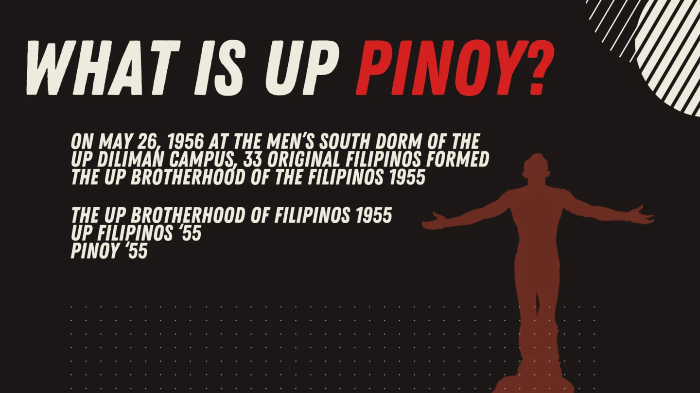

The brotherhood traces its formation to May 26, 1956 at the Men’s South Dorm of the UP Diliman campus.
UPBF 55
A historic brotherhood at UP Diliman,built on fellowship, character, and continuity.
The UP Brotherhood of the Filipinos 55 stands as a long-standing community within the University of the Philippines Diliman, shaped by shared heritage, enduring brotherhood, and a commitment to growth that extends from campus life into professional and public service.

The organization’s founding story is anchored in a clearly remembered beginning, giving the brotherhood a strong sense of continuity and identity.
Its public identity is inseparable from the university: academic life, campus community, and fraternity across batches and generations.
Who we are
A brotherhood shaped by heritage and directed toward meaningful contribution.
UPBF 55 is a fraternity that values belonging, maturity, and responsibility. Its story is not only about founding dates and old photographs, but about the kind of relationships it seeks to cultivate: relationships built on trust, counsel, loyalty, and long memory.
Its historical roots include service to the male Bisayà student community of UP Diliman, alongside programs that support members, strengthen the organization, and contribute to Philippine society more broadly.

Mission and values
Brotherhood that is meant to be lived, not merely stated.
UPBF 55 is guided by a mission of enriching campus life and by values that place character at the center of fraternity life.
Campus life with depth
To provide meaningful opportunities that enrich the UP Diliman experience and make fraternity life an avenue for support, growth, and continuity.
Members are called to listen well, give counsel with sincerity, and assist one another in a culture of real camaraderie.
Loyalty is expressed through fairness, truthfulness, and a steady commitment to one another in both word and deed.
Determination means seeing worthwhile tasks through, whether they are difficult, ordinary, immediate, or long in the making.
Heritage and continuity
From archival portraits to present-day gatherings, the story remains active.
Historic group photographs, milestone images, and present-day activities show the brotherhood as a living network with an active sense of continuity.


Recent activity
Contemporary images that show the brotherhood in motion.
Recent activities highlight fellowship, service, and alumni connection, carrying the fraternity’s heritage into present-day work and gatherings.


Selected notable brods
View the full alumni feature list
A network that reaches business, design, medicine, public service, and industry.
Selected brods represent the breadth of the fraternity’s alumni network across business, design, medicine, public service, and industry.
Dr. Claver Ramos
One of the 33 original founding members, a José Rizal Memorial Awardee in clinical practice, and the first president of the National Kidney Foundation of the Philippines.
Wally Liu
Recognized for leadership in engineering and enterprise, including his work as CEO of Primary Structures Corp.
Kenneth Cobonpue
A multi-awarded Filipino industrial designer and manufacturer with an internationally recognized creative profile.

Get in touch
Reach out to UPBF 55.
For general inquiries, alumni correspondence, institutional coordination, or questions from members of the UP community, please coordinate through the organization’s current officers or recognized alumni channels.
What to include
A clear introduction, your UP Mail address, and the purpose of your message will help the right person respond more efficiently.
Official correspondence
For alumni coordination, institutional messages, and general inquiries, please reach out through the current UPBF 55 officers or recognized alumni channels.